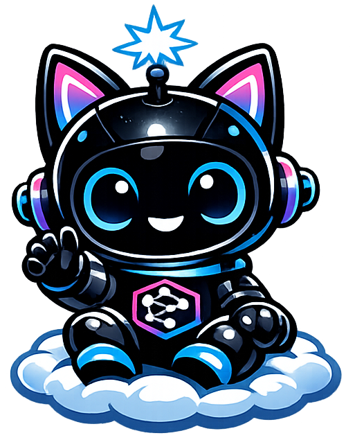
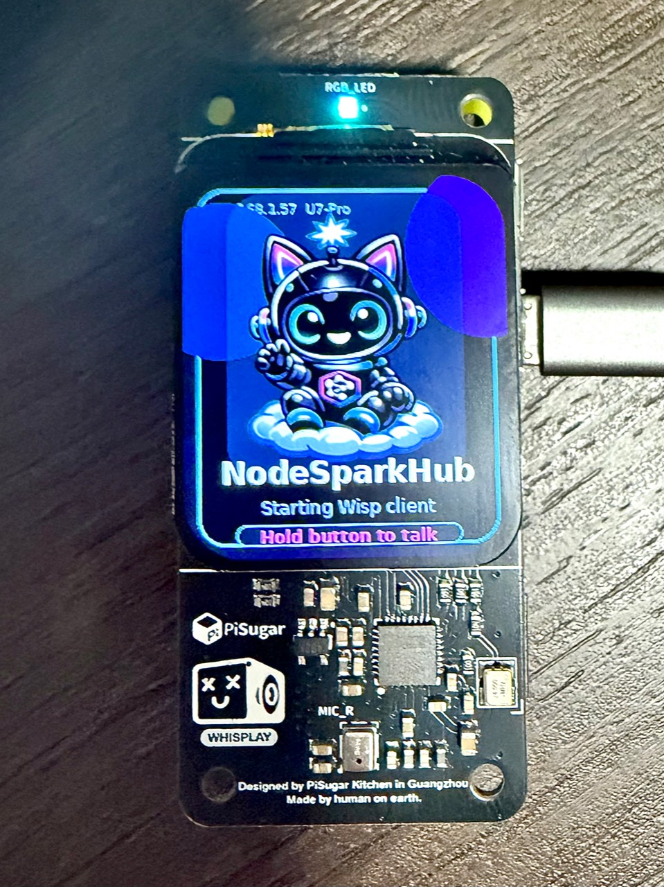

Live Hub Display
Show messages, rich cards, progress, alerts, QR codes, dashboards, and branded status screens.

NodeSpark WispPhysical workflows for NodeSparkHub
A pocket-sized physical device family that gives NodeSparkHub a real display, speaker, microphone, touch controls, AI assistant access, and workflow interface for live automation demos.
Why it matters
Wisp connects Hub workflows to physical output. It can show workflow status, request approvals, display QR codes, run favorites from a button or touch screen, play sound, ask NodeSparkHub's default AI model, and bridge mobile demos through NodeSpark on iPhone.
Jetson monitor companion
Synra is the larger on-screen companion for NodeSparkHub: an original anime-style AI assistant that runs as a normal app on the NVIDIA Jetson Orin Nano, listens from the monitor, speaks replies, animates workflow state, and stays connected to the same Hub device command model as Wisp.
What it can do
Show messages, rich cards, progress, alerts, QR codes, dashboards, and branded status screens.
Run selected NodeSparkHub workflows from the hardware button or direct Hub commands.
Ask for a physical approve or reject decision and send the result back into the workflow.
Ask NodeSparkHub's default AI profile questions and show or speak the response on the device.
Speak Hub responses through the onboard speaker and play startup, success, and error chimes.
Optionally connect NodeSpark on iPhone over Bluetooth LE for travel demos and direct Wisp commands.
NodeSparkHub Intelligence
NodeSparkHub 3.2 adds an Intelligence Center that upgrades Wisp Assistant requests with local assistant memory, Auto Context, Knowledge Vault controls, token compression, prompt safety checks, proactive suggestions, device presence awareness, and smarter model routing while keeping existing pairing, workflow, device command, and Bluetooth bridge behavior intact.
Hardware
Choose the Wisp that matches your build. The Raspberry Pi Whisplay version is the polished pocket demo with a custom OS image, the ESP32-S3 version is the flexible touch prototype, and the M5Stack Core2 version is the easiest all-in-one touchscreen device.

Best for the finished sales demo: startup mascot, speaker, mic, button, battery, and reliable iPhone Bluetooth bridge.
Best for low-cost touch panels, custom enclosures, wall controls, and breadboard experiments.
Best for a premium no-wiring microcontroller Wisp with built-in touch, battery, sound, mic, haptics, and sensors.
Install
Use NodeSparkHub 3.2 or newer for the Intelligence Center and direct Wisp Assistant support. Use NodeSpark iOS 3.2 or newer for the updated Wisp Mobile Bridge controls.
Raspberry Pi Imager -> Use custom
Choose nodespark-wisp.img.xz
Set Wi-Fi + user settings
Flash microSDOpen Settings -> Intelligence
Enable Wisp Assistant
Open Hub Server -> Devices
Generate pairing code
Pair Wisp from SSH or QR/setup screenbash scripts/build_pi_image.shgit clone https://github.com/synryzen/nodespark-wisp.git
cd nodespark-wisp
bash scripts/install_pi.shcp firmware/esp32-s3-wisp/nodespark_wisp_esp32/config.example.h \
firmware/esp32-s3-wisp/nodespark_wisp_esp32/config.h
bash scripts/build_esp32_s3.shcp firmware/m5stack-core2-wisp/nodespark_wisp_core2/config.example.h \
firmware/m5stack-core2-wisp/nodespark_wisp_core2/config.h
bash scripts/build_m5stack_core2.shFull setup guide: Install NodeSpark Wisp
NodeSparkHub All Access
Wisp is not split into separate locked device tiers. The subscription powers the NodeSparkHub runtime behind pairing, command routing, workflow execution, automation history, and iPhone Mobile Bridge forwarding.